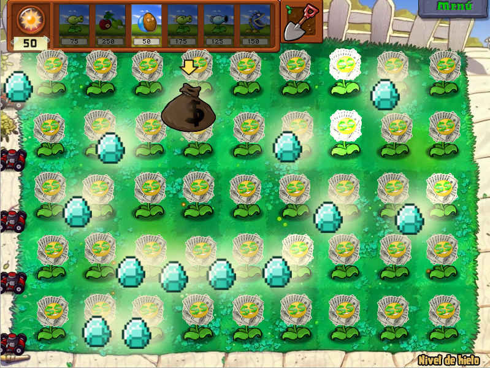

Los primeros cambios
|
Este
es el documento que mencioné anteriormente, contiene principalmente direcciones en hexadecimal que poseen datos que se pueden alterar
sin provocar que el juego colapse mediante abrir el ejecutable del juego (.exe) con herramientas como HxD o Cheat Engine.
Lo primero que podemos ver son cosas como el precio y tiempo de recarga de las plantas, junto a muchas cosas más como daño de proyectiles, vida de plantas y zombis, entre otros. Lo primero que modifiqué fueron 2 plantas; la Tripitidora y la Guisantralladora. La primera fue ya que en el juego base no era una planta que valiera mucho la pena por su precio de 325, así que mi idea era hacer que dispare guisantes helados, que ralentizan a los zombis, y reducir su costo a 275. El problema estaba en cambiar su proyectil, ya que un único valor determinaba que proyectil todas las plantas que lanzaban guisantes normales; por lo que si lo cambio, no solo la Tripitidora dispararía otra cosa, si no que las otras 4 o 5 plantas ligadas a este valor también lo harían; en este momento es cuando llegó a mi una posible solución a este problema: La inyección de scripts. En sí en la guía solo se hablaba de modificar valores, pero nada más allá de esos valores. Aunque al final del documento había un enlace que nos lleva a otro con scripts para el juego, o en otras palabras, códigos que cambian que no serían posibles mediante cambiar uno o dos valores; pero ahora tendría que aprender cómo incorporarlos al juego (inyección de scripts), no voy a entrar a detalle en el proceso, pero lo voy a resumir por encima. Primero abres el juego y Cheat Engine, programa usado para modificar y meter trucos a los juegos; tras esto, con el juego vinculado a C.E., miras la memoria del juego y buscas una de sus "code caves", espacios de memoria vacía en en juego, estas son 2, pero creé otra más utilizando CFF Explorer. Una vez agregado el script al juego, lo abres y notaras el término "newmem", este tiene que ser reemplazado por una dirección a una code cave (el llamado punto de inyección), tras lo cual puedes activar el script y ver cómo funciona en el juego. Sé que esto es confuso, pero ya casi estamos, ahora, sin cerrar ni el juego ni C.E., abrimos OllyDGB y abrimos el juego dentro de este programa y buscamos el punto de inyección, seleccionamos todo, lo copiamos a ejecutable, y lo guardamos como tal. Tras esto, en un principio, tendremos el ejecutable con el script implementado, aunque en varios casos habrá que hacerlo varias veces. En definitiva, es un proceso que requiere paciencia y varios respaldos del ejecutable por si acaso. Tostón a parte, he sacado el tema para no tener que mencionarlo en lo que queda de entradas y porque uno de los scripts hacía que una planta disparara aleatoriamente entre 2 proyectiles, así que al final hice que la Tripitidora dispare guisantes y guisantes helados a intervalos irregulares. Por otro lado, está la Guisantralladora, que en realidad fue la primera planta que modifiqué por completo, al ser cambios más sencillos. Básicamente ahora es una verdadera ametralladora, en vez de disparar 4 guisantes en un margen de tiempo, ahora dispara guisantes de constantemente, además aumenté su precio a 400, más lo que costaría una repetidora (las plantas de paquetes morados son mejoras de otras plantas que tienen que estar ya puestas en el jardín). Además con este cambio ya tenía en mente un cambio respecto a los 3 "Lanzaguisantes" principales del juego, ahora en lugar de aumentar la cantidad de guisantes por disparo, ahora aumentaría la frecuencia de disparo. |
 |
|---|
| Una pequeña demostración |
 |
| En el juego original, Lanzaguisantes, Repetidora y Guisantralladora |
|
Algo similar hice con el Girasol (productor principal de sol para plantar otras plantas), en vez de producir 25 soles tras un rato, ahora produce 15 y en menor tiempo, no tengo mucho más que decir con este. Por otro lado, estaría Margarita; en el juego original esta genera monedas de plata y, en una menor proporción, de oro; estas sirven para comprar las plantas de mejora (como Guisantralladora), entre otras cosas. Resulta que uno puede cambiar los objetos que suelta y dentro de los que puedes hacer que suelte estarían las joyas, que valen 1000 monedas, y el saco de dinero, una de las recompensas que obtienes al terminar un nivel y que al recoger pasas al siguiente. Lo que intento decir es que he convertido a Margarita en una planta que te puede permitir pasar por completo un nivel, ¿esto está balanceado? ¡No! Pero, al ser una planta que obtienes al final del juego y al aumentar su costo de 50 a 300 y aumentar su tiempo de recarga, algo se ha hecho. |
|  |
| Justo y balanceado |
|
Para cerrar esta entrada, aquí adjunto los perfiles de las plantas modificadas. |
 |
 |
 |
|---|
 |
|---|
| Entrada 1 |
|---|
| Sección principal |
| Entrada 3 |
| Entrada 4 |
| Entrada 5 |